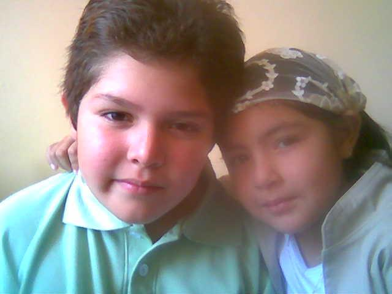
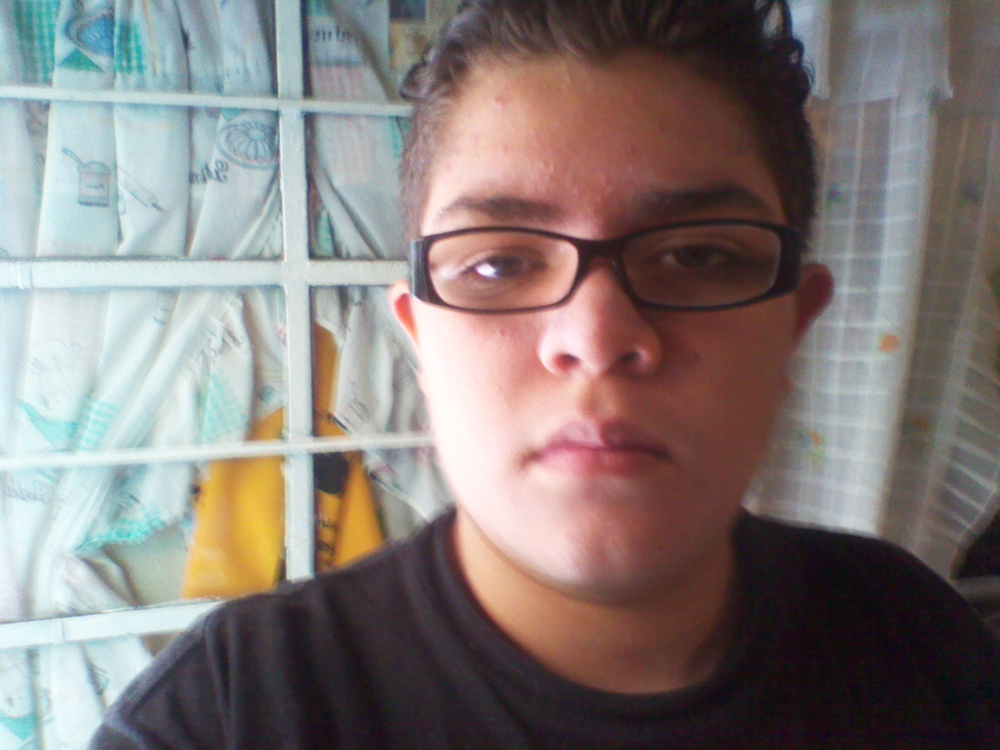
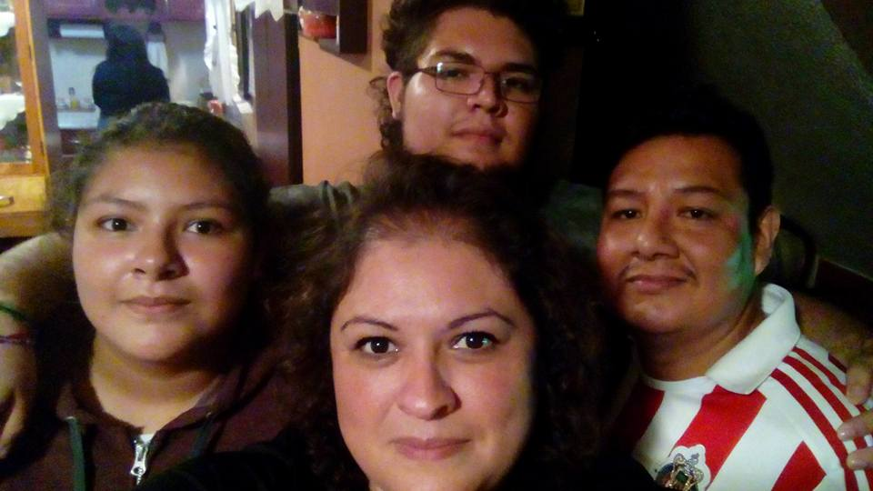

Mi vida inicio el 22 de julio del año 1999 nací pesando 4 kilos 100 gramos midiendo 50 cm, crecí un pueblo cerca de Xochimilco llamado San Mateo Xalpa conde pasé alrededor de 6 años de mi corta vida, después por problemas que aún no comprendí me desalojaron de lo que lamba mi casa, desde ese entonces perdería el concepto de “mi casa” ya que todavía hasta la fecha no e conseguido una o considerado tener una e tenido “hogar” pero lo que más Ancio es una casa, pero regresando al tema, después de que nos desalojan de duramos alrededor de medio año viviendo con mis abuelos paternos en una colonia de Tlalpan cerca del estadio azteca, posteriormente a ese periodo de tiempo nos fui a Nezahualcóyotl a vivir con mis abuelos maternos, en ese lugar viví durante 5 años concluyendo mi primaria y secundaria, por razones de la vida decidí ir a vivir con mi papá un tiempo, en esta colonia llamada A.M.S.A viví alrededor de 6 años, donde concluí mis estudios en el colegio de bachilleres número 13, después me metí al programa del gobierno jóvenes construyendo el futuro para aprovechar el tiempo y volví a intentar entrar a la universidad llevándome al día de hoy, esperando en seguir mejorado y poder lograr mis objetivos
"Entre mas negra la noche más brillan las estrellas"

 

